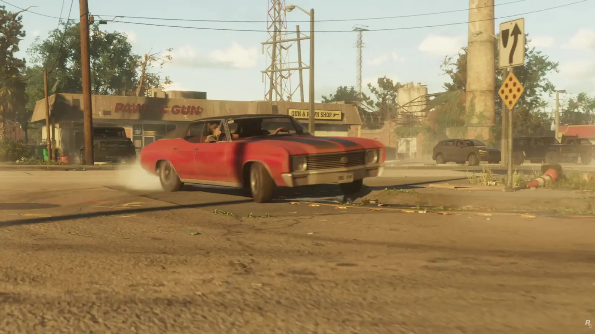

GTA 6 en PC
¿Cuándo sale GTA 6 en PC?
Si juegas en ordenador, toca esperar. Esto es lo que se sabe, lo que se rumorea y qué hacer si quieres tener el PC listo cuando llegue.
Lo que se sabe
- Oficial GTA 6 no sale en PC el día del lanzamiento. El jefe de Take-Two, Strauss Zelnick, ha explicado que primero van las consolas.
- Oficial Zelnick también ha dicho que sus grandes juegos acaban llegando a todas las plataformas, y que el PC ya es entre el 40 y el 50 % de sus ventas.
- Rumor Un reportaje de GamesBeat de octubre de 2026, con cuatro fuentes anónimas, habla de que saldría en PC entre enero y marzo de 2027. Ni Rockstar ni Take-Two lo han confirmado.
- Historial GTA 5 salió en consolas en septiembre de 2013 y en PC en abril de 2015: unos 19 meses después.
Lo que creo yo
Teoría No va a tardar tanto como GTA 5: hoy el PC vende demasiado como para esperar casi dos años. Lo veo en 2027, y es muy probable que llegue junto al online o poco antes, porque en PC es donde vive la comunidad de rol y de mods.
¿Qué requisitos pedirá?
Rockstar no los ha publicado. Para hacerte una idea: si una PS5 lo mueve, para jugarlo igual o mejor en PC lo razonable es pensar en algo así. Es una estimación mía, no un dato oficial.
| Para jugar como en consola | Para jugar mejor (1440p, más FPS) | |
|---|---|---|
| Gráfica | RTX 3060 12 GB o RX 6700 XT | RTX 5070 o RX 9070 |
| Procesador | Ryzen 5 5600 / Core i5 de 12.ª gen | Ryzen 7 7800X3D o 9800X3D |
| RAM | 16 GB | 32 GB |
| Disco | SSD NVMe con más de 250 GB libres (en disco duro normal, ni lo intentes) | |
Piezas para estar preparado
Si vas a mejorar tu ordenador, mi consejo: no compres todo ya. Espera a que Rockstar publique los requisitos; para entonces, además, habrá ofertas. Si aun así quieres ir mirando:
PC ya montados
Si no quieres montarlo tú, busca uno que tenga como mínimo lo de la columna de la derecha.
Periféricos
Mientras tanto
Si no quieres esperar, la forma de jugarlo el 19 es una PS5 o una Xbox Series. Tienes todo en lo que necesitas para jugar.
Los enlaces a Amazon son de afiliado: si compras desde ellos me llevo una pequeña comisión y a ti no te cuesta nada más. Me ayuda a seguir haciendo vídeos. Precios y disponibilidad pueden cambiar.
Te aviso cuando anuncien la versión de PC
Suscríbete y activa la campana: el día que Rockstar diga fecha y requisitos para PC, lo cuento en Godca.
Suscríbete a Godca en YouTube